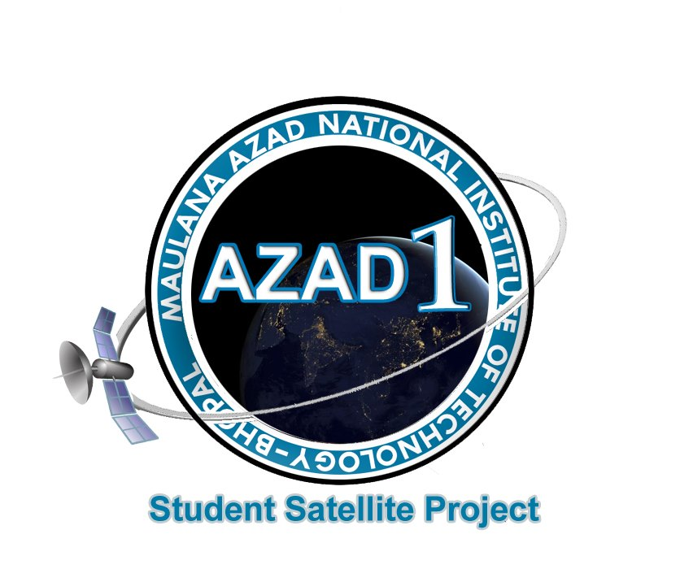

Hello, my name is Ritika Chakradhar. Thank you for visiting my site! Get to know more about me. Download my resume to see if I can help your business or projects.
You can download my resume Here.
Having attended the crème – la crème institutions of India at both the school and college level, I have developed a habit of constantly thriving for excellence as is evident from my past track record.
CBSE 10th grade: 10/10
CBSE 12th grade: 93/100
NIT Bhopal B.Tech (14-18): 7.98/10.
As I entered college, I was chosen for a five member team from 4,000 students to be a part of the development of a nanosatellite as an independent project by students of NIT Bhopal, which gave me further insight to learn softwares and work as part of a team. Since then, I haven't looked back.
People around me describe me as an initiator. I’ve founded several clubs and societies in my college, and consequently, my organizing and managerial abilities are remarkable. I am a regular debater and public speaker, and possess excellent oratory and communication skills, which help me to gel with any team. I work hard and don’t let pressure hamper my performance.
I am currently a third year B.Tech student at NIT Bhopal, and possess a strong academic record. I have always enjoyed and been strong in areas that require problem solving, analytical and mathematical skills. I am eager to combine the knowledge and aptitude for these skills with my interest in programming, which has always fascinated me.


● Determined sensors and actuators that can be used on the nanosatellite with a payload to observe the Corona Effect
●Competitively selected in a team of 5 members from 4,000 for ADCS System
● Analysed and compared various kinds of magnetometers and determined that HMC5883L would be best suited for Azad-1 and constructed a flight board to test the interfacing of sensors with single board computers
Azad-1
● Organized a detailed survey on current GPS tracking and Estimated Time of Arrival methods used in different cities of India and analyzed their algorithms of tracking and simulation of data and developed an algorithm which ensures a more precise and accurate analysis of estimated time of arrival and tracking of public transport, reducing the analysis time and increasing the efficiency
● Appreciated for algorithm at technical fest of IIT Chennai
Algorithms
● Created a database for over 220 students using MySQL as the database manager for all information.
● Created various features for the Admin and the Teacher to update, delete, edit the attendance as well as calculate percentage attendance for each student
● The project involved use of PHP as well as HTML and CSS.
●Updation of attendance was through checkboxes.
DBMS&Software Dev.